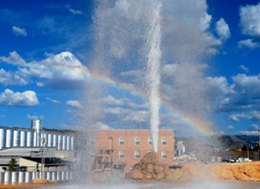

Soda Spring
The city is named for the hundreds of natural springs of carbonated water that are located in and around the city.
The springs were well known to Native Americans and were a famous landmark along the Oregon Trail in the middle 19th century. Today the city is also known as the location of the Soda Springs Geyser, which was unleashed in 1934 when "town fathers" were looking for hot water for a "hot pool" bathing attraction. Instead they drilled into a chamber of highly pressurized carbon dioxide gas and cold water and the geyser was released.
After running for weeks, and flooding the downtown area, it was capped and manually released when requested as a tourist attraction. Now it is let loose every hour on the hour by a timed release valve. Its height and volume have not decreased after many years. There are viewing platforms at either end of the travertine mound where the geyser erupts. Interpretive signs are located on the platforms explaining this phenomenon.